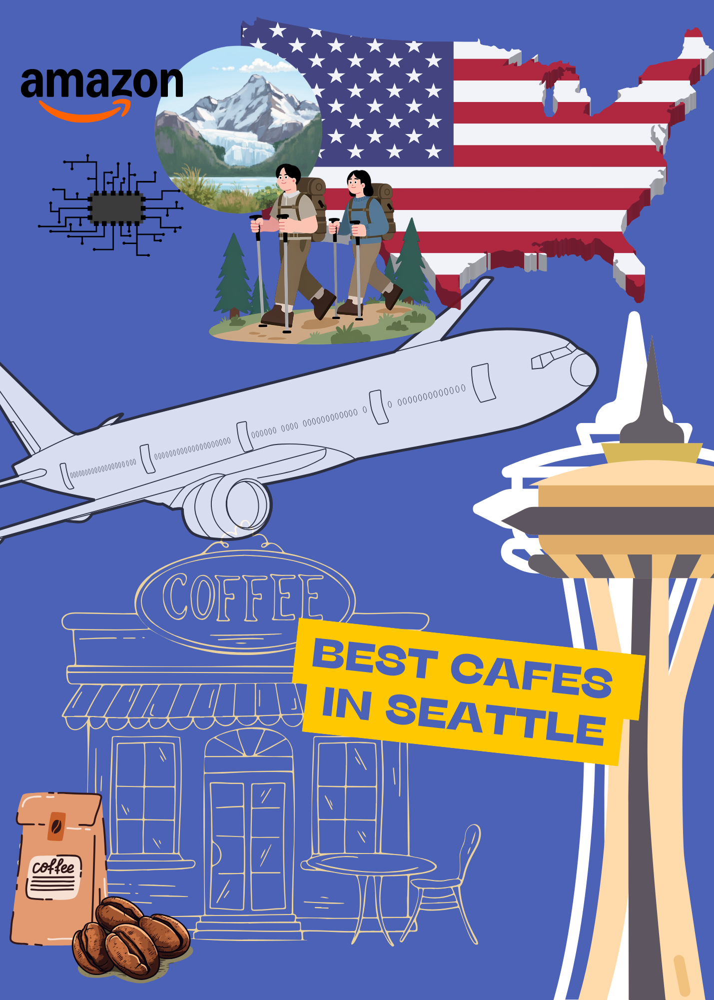
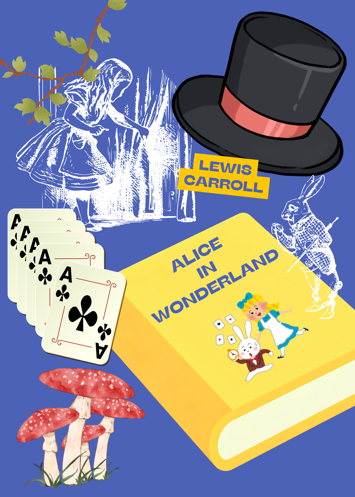

Project 2:
5 Best cafes

Created a cafe guide website featuring five cafes in Seattle. The content is based on firsthand experiences, providing authentic and credible recommendations.
Project 2
Created a cafe guide website featuring five cafes in Seattle. The content is based on firsthand experiences, providing authentic and credible recommendations.
Project 2Designed a single-page website introducing Seoul, my hometown and one of my favorite cities, featuring recommended local attractions and places to visit.
Project 3
Designed and developed an original Alice in Wonderland e-book layout using public domain text and illustrations, focusing on visual hierarchy and overall page composition.
Project 4
Google font:
Jim Nightshade ,
Lato
All images used in this portfolio were created by me